10月24日 第二学年 研修旅行その7
2日目の午後は、札幌での自由研修と藻岩山の夕景・夜景です。
札幌ではラーメンを食べる班、スウィーツを食べる班、札幌の見どころを見学する班などがありました。短い時間でしたが、楽しんでいる様子でした。
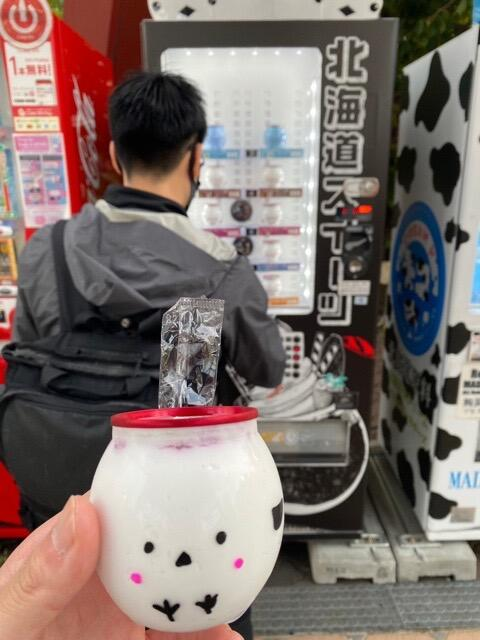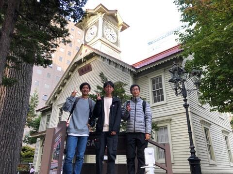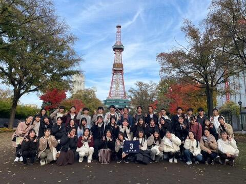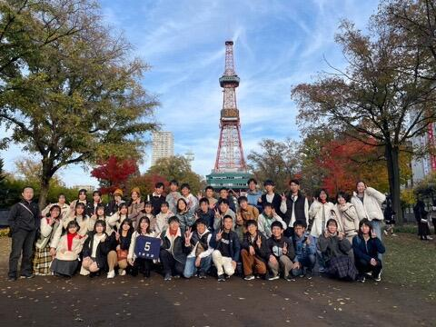
テレビ塔での記念写真もとりました。
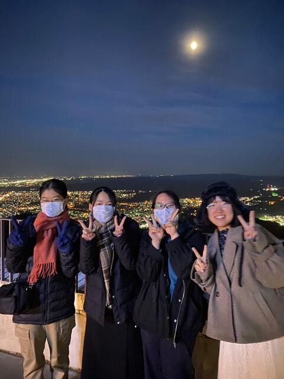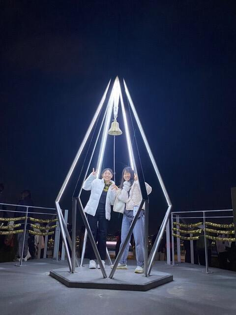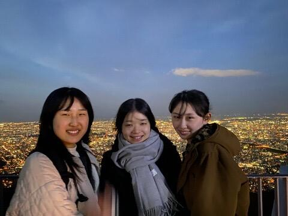
日が落ちるとぐっと気温も下がり、風が強かったこともあって一気に寒くなりましたが、藻岩山の夕景、夜景は非常にきれいでした。
その後、今夜のホテルに移動しました。これから食事、その後は各自リラックスの時間です。
順調に日程が進んでいます。
10月24日 第二学年 研修旅行その6
自然体験アクティビティとクラフト体験の様子です。天候に非常に恵まれました！
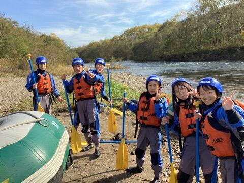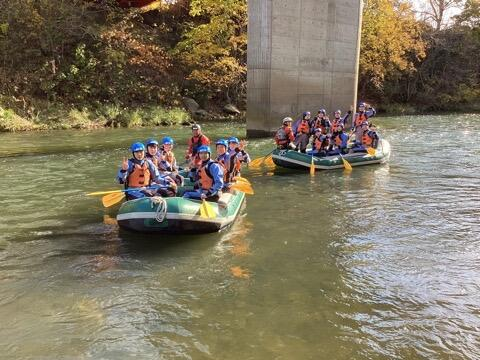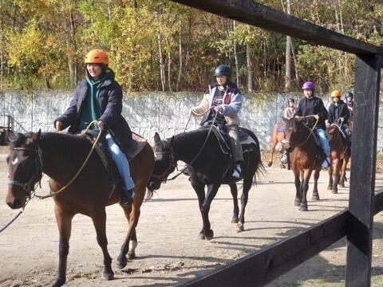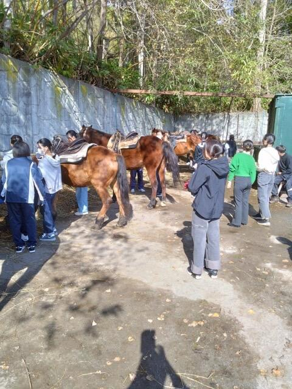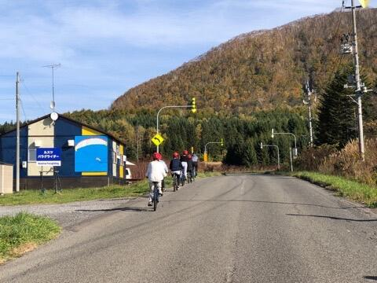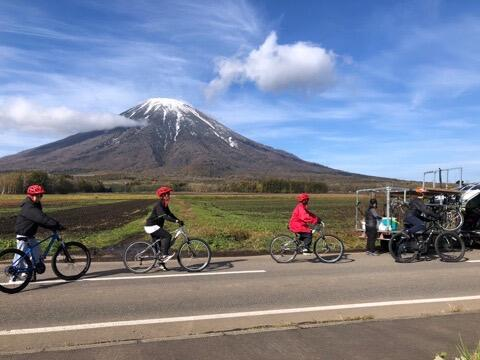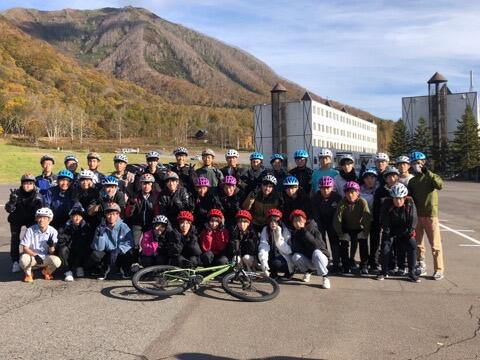 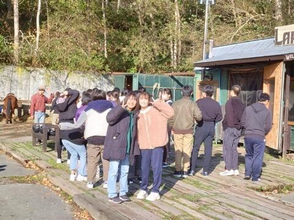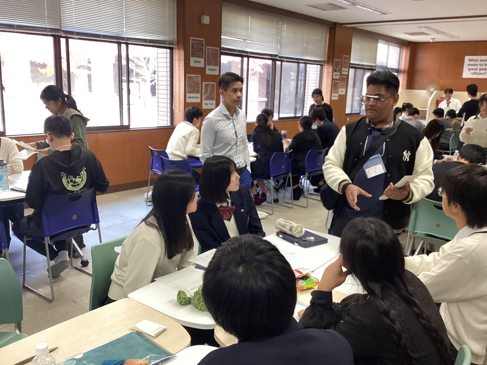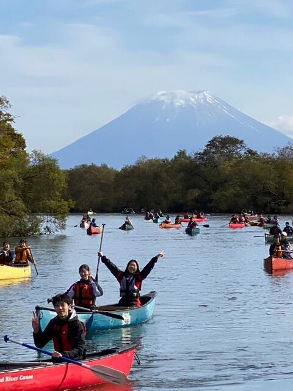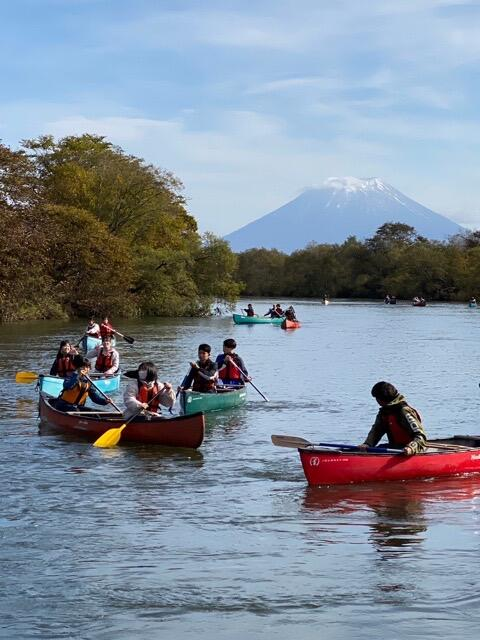
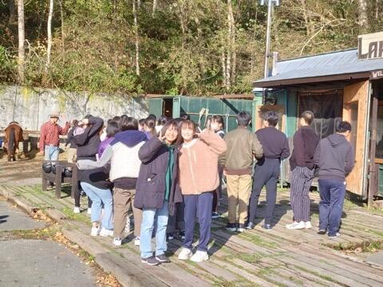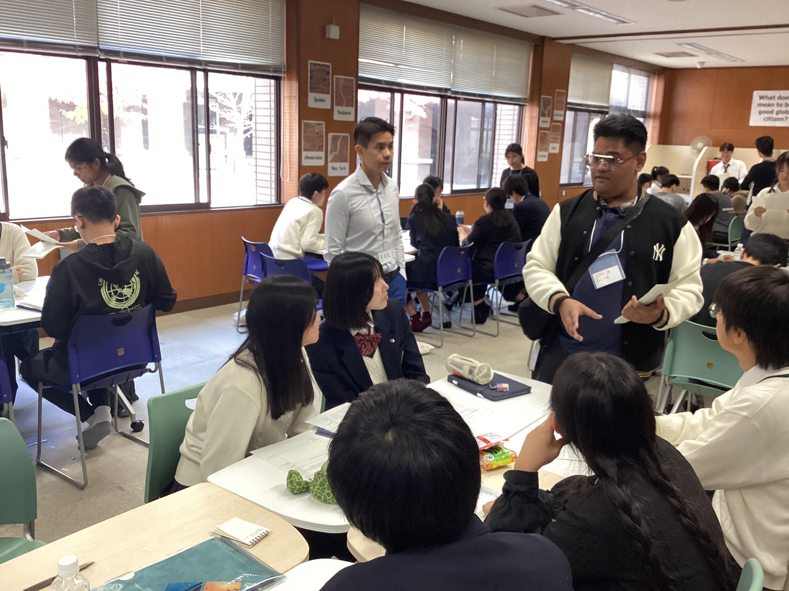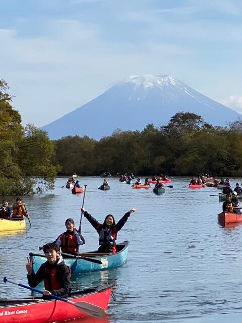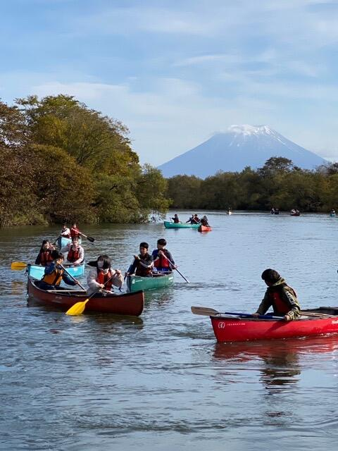 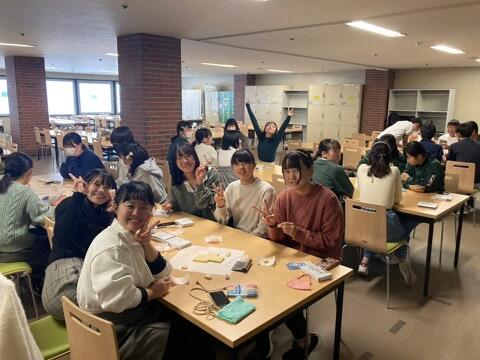
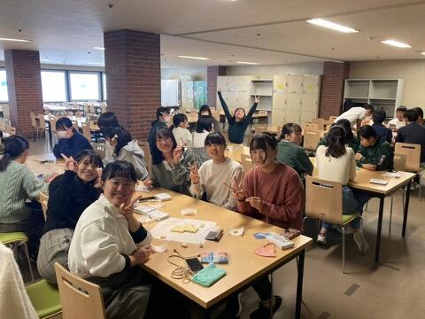 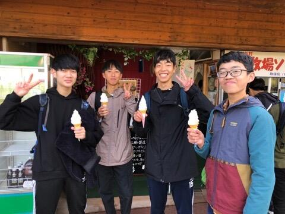
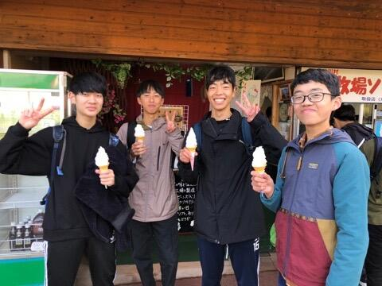
朝は寒かったですが、昼前にはとても暖かかくなりました。どの体験も楽しく、北海道の雄大さを感じました。
これからルスツから札幌に向けて移動します。
札幌では、クラス写真の撮影と市内での自由研修後、藻岩山へ移動して夕景・夜景を見に行きます。
10月24日 第二学年 研修旅行5
今朝は冷え込んでいます。朝は氷点下まで冷え込んでいました。
朝食をしっかり食べて、アクティビティに向かいます。


ラフティング、リバーカヌー、マウンテンバイク、乗馬、レザーワーク、生キャラメル&アイス作り体験から1つ選んで体験します。
天候には非常に恵まれました。

大自然を満喫してきます。
10月23日 第二学年 研修旅行その4 夕食の様子
ホテルでの食事を終えました。おいしいご飯で、生徒も大喜びでした。


明日は、ルスツでの自然体験やクラフト体験があります。
夜は冷えるので暖かくして就寝です。
体調不良者はなく、全員元気に過ごしています。
10月23日 2年生研修旅行その3
クラス別研修の様子です。


どの生徒も笑顔で過ごせました。
北海道の大きさや自然を感じたクラスもあれば、新しい施設や甘いお菓子に舌鼓･･･といったクラスもありました。
この後は、ホテルで食事です。
10月23日 新千歳空港
全団無事に北海道に到着しました。北海道はよく晴れていますが、少し肌寒いです。


このあとは、クラス別研修を経て、ルスツのホテルを目指します。各クラスの行き先は・・・
1組 白い恋人パーク
2組 登別地獄谷
3組 鮭のふるさと千歳水族館
4組 ハイジ牧場
5組 ＡＯＡＯ Ｓａｐｐｏｒｏ
6組 北海道箱根牧場
7組 白い恋人パーク
8組 登別地獄谷
それぞれ、有意義な活動にしたいと思います。
第2学年研修旅行1
令和5年10月23日〜26日 北海道研修旅行
天候にも恵まれ、全クラス無事に京都駅を出発しました。
名古屋、神戸、伊丹の3つの空港から北海道新千歳空港を目指します。


今日の予定は、北海道到着後、クラス別研修として、クラスごとに別々場所で研修します。
その後、ホテルを目指します。


今日は後輩たちのために進学説明会の準備中。

学食のメニュー紹介や在校生による進路相談など生徒企画も賑やかです。
何やら熱心に見ている生徒の姿が...

なんと受験で使った自分たちのノートを展示しています。生徒いわく「自分たちがやって欲しかったことをしてあげたい」とのこと。
...そして1番に食いついたのは校長先生でした。

ノートの表紙書に書かれた受験生へのメッセージに感動されています。

生徒企画おそるべし、ある意味すでに成功です。
もちろん中学生からも大好評！

→嵯峨野の見どころ②【進学説明会】へつづく
10月19日に第２学年で研修旅行結団式を行いました。
10月23日～26日にかけて研修旅行で北海道に向かいます。それに向けて、マナーやルールなどの心構えを確認しました。
安心安全を大切に、たくさんの思い出が作れる、有意義なものにしたいと思っています。


１年生京都こすもす科専修コースでは、SSL（スーパーサイエンスラボ）Ⅰが始まりました。
先週のガイダンスを終え、今週から理科（物理・地学・化学・生物）・数学の各教科の実験を行います。
初回は、物理と地学です。
【物理】
本日のテーマは「綱引きにおいて、どのような姿勢を取るのが効果的か？」
今回は、角材を用いてモデル化した実験装置を組み立て、データロガーで張力の測定を行いました。iPadを用いてデータ計測や分析を行い、グループで結果について議論するなど、より深い実験になりました。


【地学】
本日のテーマは「木の高さを測ろう」
木の高さをどうやって測るか、初めて触れる器具を用いながら、試行錯誤を繰り返しているうちに、数学で既習の三角比や、中には相似を使って求めるなど、それぞれの班で工夫が光る実験でした。


10月15日（日）、太秦小学校にて開催された「第28回太秦福祉ふれあい祭り」の芸能コーナーに、バトントワリング部16名が参加しました。
ステージでは、文化祭で披露した曲目の中から「Shake it off」をはじめとした計３曲のパフォーマンスを行いました。
部員にとっては１・２年生ともに初めての地域イベントへの参加。会場に到着した時には緊張している様子も見られましたが、スタッフの方々の中には本校の卒業生という方もいらっしゃり、「応援してるよ」と温かいお声掛けをいただきました。そのおかげか、本番のステージでは笑顔でパフォーマンスを行うことができました。
また、上演後には部員も地域の皆様と一緒にお祭りを楽しませていただきました。太秦社会福祉協議会の皆様をはじめ、スタッフの皆様、見に来てくださった皆様、本当にありがとうございました！
今後も、地域の皆様に見ていただけるのを励みに、部員一同頑張っていきます。
卒業生からのメッセージ
西村春輝と申します。
2007年に嵯峨野高校普通科I類を卒業しました。
略歴
嵯峨野高校卒業後、佛教大学教育学部臨床心理学科に進学し、その後筑波大学大学院人間総合科学研究科心理専攻に進学しました。そのまま大学院で心理学の博士号を取得した後、量子科学技術研究開発機構で3年間、博士研究員として勤務した後、現職の大原記念労働科学研究所で研究員をしています。
高校時代の様子
大学院から今まで、研究者として活動を続けてきた私ですが、実は高校時代は勉強を完全に放棄していて、色々な方々に心配されていました（その節はご迷惑をおかけしました...）。部活（剣道部）は楽しかったので、毎日部活のために通っていましたが、定期試験はほぼ赤点で、2年生の時は、生物と英語と数学が5段階評価で1、残りは全て2か3という有様で、当時は研究者になることなど全く考えられませんでした。
そんな私ですが、3年生になる頃にカウンセリングの仕事に興味を持ったことがきっかけで、臨床心理士を目指しました。元々、仕事をするなら人の役に立つ仕事がしたいと思っていたのですが、根が引きこもりの私の性格とカウンセリングのような仕事が合っていそうだなと思ったのです。なお、心理学を使って「心の問題（悩みや心の病気）」を扱う仕事をするための資格として、当時は臨床心理士が最も主流でしたが、数年前に公認心理師という国家資格もできました。
志望校は臨床心理学を専門的に学べる学校にと思い、佛教大学臨床心理学科にしました。当時の自分としては高い目標でしたが、なんとかギリギリ合格することができました。
大学時代
心理学は私にはとても合っていたようで、大学で心理学を勉強しているうちに、研究者になりたいと思うようになりました。そして学部の恩師の勧めもあり、筑波大学の大学院に一浪して入学しました。その後博士課程まで進学し、博士号取得後に量子科学技術研究開発機構の博士研究員として研究を行った後、現在に至ります。
高校時代を振り返って
私の高校時代の過ごし方は、どう考えても効率が悪く、研究者という職業に就く上では大きな回り道をしたなと思います。私は高校生の頃から「楽しくないことはやらない」「納得できないことはやらない」という思いが強かったと思います。その頃は将来の目標もなかったので、「やりたい事がないのに勉強してもしょうがない」と極端なことを思っていました。
今でも勉強は嫌いですが、高校時代に勉強していなかったことを後悔することも多いです。学部生のころは論文の内容を理解して執筆するための英語やデータ分析をするための数学を勉強し直す必要がありました。今でも、必要な解析方法を理解するのにとても時間がかかります。漢字の読み方を間違えているのではないかといつもハラハラしています。でも同時に、回り道をしたから今の仕事や生活があるのかな、という納得感もあります。
心理学と現在のお仕事
ところで、皆さんは心理学にどんなイメージを持っていますか？大学の心理学の講義で心理学のイメージを尋ねると、「メンタリスト」「人の心が読めそう」「プロファイリング」「カウンセラー」「心の病を治す」のようなものがよく挙げられます。
実は、学問としての心理学は、これらのイメージとは、かなり乖離があります。たとえば、基礎的な心理学のテキストでは、脳神経系の情報伝達の話や、脳のそれぞれの場所はどんな働き方をしているのか、についての解説から始まります（当時は「洗礼」と呼んでいました）。理系っぽいですね。脳神経系の基礎を学んだ後、知覚、記憶、感情、集団行動、心の疾患など、人間の行動に関する科学的知識について学び、人の心を読むようなテクニックは悲しいことに学ぶ機会はありません。
特に多くの学生が苦労しやすい一方で、「ハマる人はハマる」のが、統計学と調査・実験の手法についてです。大学は研究をするところですから、心理学で心のメカニズムについて研究するためには、これらの技術の習得は避けて通ることができません。いわゆる文系に属する学生にとっては、統計学や実験は苦労しやすいところです。もちろんそのことは先輩や大学の教員も重々承知であり、また自らが経験してきたところですので、教え方を工夫したり、色々なサポート体制があることも多いです。そのような体制があったので、私も学部生の時に理解することができました。
大学院の研究と現在の仕事について
大学院では、簡単に言うと、「ネガティブな思考」について研究を行いました。どんな人でも、落ち込んだ時には、自分についてあれやこれやと考えてしまいます。心理学では、自分について繰り返し考え続けることを「反すう」と呼びます。反すうは誰でも起こり得るものなのですが、それが何時間も何日も続いてしまうと非常に苦しいです。そのため、私は大学院で、何故、このように考え続ける人とすぐに考えを辞められる人がいるのか、について研究を行いました。
ヒトは、絶えず、何かに注意を向けています。たとえば、授業中をイメージすると、先生の話、窓の外の景色、近くの席の友達の話声、最近面白かった漫画のことなど、同時に様々な刺激に注意を向けており、その対象は絶えず変化しています。また、同時に色々な対象に注意を向けてはいますが、そのバランスは様々です。先生の話に100%注意を向けていることもあれば、趣味のことと先生の話の割合が8：2くらいの時もあるでしょう。集中できないときに、自分から「よし勉強をしよう」と思っても、うまく先生の話に注意を向けられず、つい別のことを考えてしまうこともあるでしょう。このように、注意というのは自発的なコントロールが難しいものであることは、皆さんも実感していることと思います。
そこで、我々ヒトは注意を望むところに向けられるように、自分の意志ではなく様々な「条件」を整えます。たとえば、「図書館に行く」、「机の周りを整理整頓して気が散らないようにする」、「タイマーをセットして勉強時間を決める」、などです。心理学では、様々な実験を行って、ヒトはどのような条件で注意を向けることができるのか、あるいは向けられなくなるのか、についての研究が積み重ねられてきました。それによって、ヒトの注意のメカニズムもある程度わかってきています。私の研究では、反すうをよくする人と、よくしない人の注意の特徴について、様々な条件で実験を行うことで、そのメカニズムを調べ、博士論文を書きました。
心理学を生かした仕事
このような大学院での研究の経験は今の仕事にも活きています。皆さんは、間違えた時やうまくいかなかった時、「もっと集中しろ」「注意力が足りない」などと誰かから指摘されたことはありますか？人生で全く言われたことのない人はおそらくいないでしょう。しかし、上述のように、注意を向けられるかどうかは、その時の条件（体調や経験も含む）によって大きく変化するので、「集中しろ」と言われても、その条件が変わらないと集中するのは難しいのです。多くの人が「失敗をしない人はいない」ということは頭では理解してはいるのですが、その一方で、多くの人が「集中できなかった」条件には目を向けず、このような言葉をかけるだけで何とかしようとする態度を持っています。授業の話だけであればそのような態度を持っていても、誰かが怪我をしたり、亡くなったりすることはありませんが、製造業や建設業などの危険を伴う仕事では、ちょっとしたことで大きな事故につながることがあります。また、商品の品質に大きな影響を与えるかもしれません。一度の失敗の影響が大きいので、失敗を予防するための効果的な制度や対策をとる必要があります。それは、工学的な設備だけでなく、どのようなルールで運用するのか、どのように人々が働いているのかという心理学的な側面を知らないと、良い制度や対策は作れません。
今の仕事は、心理学に基づくヒトの一般的な行動原理を活用して、働く人々の安全や心身の健康に関する調査や研究を行っています。まだこの分野の仕事を学び始めたばかりなので、勉強することばかりですが、これまで取り組んできた心理学やデータ分析の方法を使った専門的な仕事ができて、とてもやりがいを感じています。勉強は相変わらず嫌いですが、心理学と今の仕事は好きなのでなんとかやっています。
最後に、本記事を読んで心理学に興味を持った方は、日本心理学会が主催している「高校生のための心理学講座 YouTube版」を是非ご覧ください。心理学の分野は非常に幅広いので、この中に気になる分野があれば是非、心理学部や心理学科の受験を検討していただければと思います。（「洗礼」を受けずに済むことでしょう」）
「日本心理学会 心理学に興味のある方へ」
https://psych.or.jp/public/
「心理学ミュージアム」
https://psychmuseum.jp/
「高校生のための心理学講座 YouTube版」
https://psych.or.jp/interest/lecture_hs/

初めて心理学実験室が創設されたドイツのライプチヒ大学にて
10月6日（金）と10月11日（水）の放課後に、3年生のボランティア委員がベランダの清掃活動を行いました。
4階を1・2・3組、3階を4・5・6組、2階を7・8組で担当して、各階HR教室のベランダを掃除しました。
季節柄、虫や砂が多く大変でしたが、終わってみると「結構きれいになった！」「案外いっぱいゴミ取れた！」など、各自が達成感を得られたようです。

{kind=link}
{kind=link}
{kind=link}
{kind=link}
{kind=link}
{kind=link}
{kind=link}
{kind=link}
{kind=link}
{kind=link}
{kind=link}
{kind=link}
{kind=link}
{kind=link}
{kind=link}
{kind=link}
{kind=link}
{kind=link}
{kind=link}
{kind=link}
{kind=link}
{kind=link}
{kind=link}
9月27日(水)、１年生GI（グローバルインタラクション）の授業で韓国の釜山西女子高校とオンラインで交流をしました。参加クラスの国際交流委員がその様子をまとめてくれました。
『私たちは、嵯峨野高校についてのプレゼンを行いました。韓国の高校生は、K-popについてプレゼンをしてくれました。私は、あまり韓国のアイドルに詳しくなかったのですが、会話が弾み楽しかったです。特に、質問をし合い仲が深められたのが良かったです。その後、お互いの国の言語を教えあったことが面白かったです。英語でコミニケーションをとることは難しいですが、自分の世界が広がるので英語で話す機会をこれからも大切にしていきたいです。』

アカデミックラボ「京・平安文化論」です。
「ちゅう源氏と巡る 源氏物語 京都スタンプラリー」を実施します！
この取組は、『源氏物語』の世界を、身近に感じていただくことを目的にしています。
京都には、『源氏物語』ゆかりの神社仏閣がたくさんあります。
スタンプラリーにご参加いただき、秋の京都をお楽しみください！
〈日程〉
１０月２８日（土）、２９日（日）
１１月３日（金祝）、４日（土）、５日（日）の５日間です。
〈場所〉
スタンプ設置場所は、京都市内の『源氏物語』ゆかりの神社仏閣１１ヵ所と特設会場です。
①下鴨神社 ②上賀茂神社 ③雲林院 ④仁和寺 ⑤清凉寺 ⑥野宮神社
⑦天龍寺 ⑧廬山寺 ⑨清水寺 ⑩渉成園 ⑪東寺
〔特設会場〕古典の日フォーラム２０２３（事前に応募登録された方のみ）
〈台紙の配布〉
・本校事務室
・京都市バス・京都バスの車内
・神社仏閣１１ヵ所（古典の日フォーラムを除きます）
〈景品〉
スタンプを３つ集めると、「ちゅう源氏」オリジナルコットンバックをプレゼントします！
最新情報は、Ｘ（旧twitter）やInstagramでお知らせします。
X ＠kyo_heian_labo
Instagram kyo_heian_labo です。
どうぞ、ご参加ください！お待ちしています！
９月1６・１７日に本校にて進学説明会を開催しました。
当日は残暑が厳しい中、たくさんの中学生とその保護者の方々に来校していただきました。誠にありがとうございました。
全体会では校長先生からのあいさつ、在校生によるラボや学校生活についてのプレゼンテーション、学科長からの教育内容説明、選抜についての教科ガイダンスを行いました。その後、施設見学と個別相談等も行いました。
全体会の様子


全体会後の様子


説明会前日の放課後、広報委員の企画係が集まり、展示等の準備を行いました。
来校される中学生のために、様々な企画を広報委員会で提案し、実現することができました。今回は、約３０ある部活動の紹介チラシを作成し、掲示しました。そして、学校の魅力や受検のアドバイス、在校生の平日スケージュールを掲載したチラシを作成し、配布しました。


次回は10月21日に開催予定です。
{kind=link}
{kind=link}
{kind=link}
９月２８日（木）７限に２学期の学年アッセンブリーを行いました。今回は、この３月に本校を卒業し難関大学に進学した３名を迎え、１年生の下半期に向けた学習を中心とした生活のあり方や、難関大学の魅力などについて話をしてもらいました。９月は文化祭・体育祭など大きな行事がある中で、学習への切り替えがなかなか難しい時期でもありますが、今日の話を聴いて意識が大いに高まったようでした。授業への取り組みや、学習習慣の確立といった、一見ごく普通の内容に関する話についても多くの生徒が共感できる点が多く、身を乗り出して聴いている生徒も多く見られました。


9月22日（金）に体育祭を実施しました。本来であれば前日21日に実施予定でしたが、悪天候が予想されるため1日順延して行いました。
今年度は4年ぶりに制限のない開催となり、生徒も教職員も楽しみにしていました。生徒の願いが天に届いたのか、当日は、清々しい気候で絶好の体育祭日和でした。
今年度はグランドに全学年、教職員が一堂に集まっての開催。ローハイドや棒取り、綱引きといった種目や、各クラスの学級旗も復活し、競技はもちろん、応援にも力が入ります。声がかれるほどに熱心にクラスの仲間や同じ団の選手を応援し、歓声があがる光景や、はじけるような笑顔で楽しむ生徒の姿には、感慨深いものがありました。
この日のために春から準備を進めてくれていた体育委員の皆さん、準備・後片付けや各種目の補助をしてくれたクラブ員・保健美化委員の皆さん、放送や実況で体育祭を盛り上げてくれた放送部の皆さんのおかげで大盛り上がりを見せた体育祭でした。ありがとうございました。
〒616-8226
京都市右京区常盤段ノ上町15番地
TEL 075-871-0723 FAX 075-871-0724
E-mail [email protected]